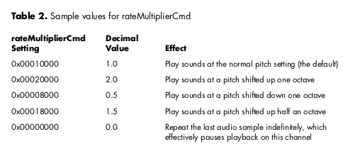

The Sound Manager is one powerful multimedia tool for the Macintosh, but no one has
ever accused it of being too obvious. This article explores some of the more subtle
Sound Manager features, showing some simple ways to improve your application's use
of sound. A sample application demonstrates features such as volume overdrive and
easy continuous sound.
The Sound Manager has a long and distinguished career on the Macintosh. First released
in 1987, it was completely revised in 1993 with the release of Sound Manager 3.0.
The introduction of Sound Manager 3.1 in the summer of 1995 brought native
PowerPC performance, making the Sound Manager one of the most powerful
multimedia tools around. However, getting the most out of the Sound Manager often
means wading through many pages of Inside Macintosh: Sound.
This article pulls together valuable information about the Sound Manager, focusing on
some of its little-known features that will ease your development of multimedia
applications. The tips and techniques come straight from the Sound Manager
development team at Apple and cover diverse areas of developer interest, including
Two of these topics, controlling pitch and compressing audio, require the use of Sound
Manager 3.1, which is included on this issue's CD. You'll also find the SoundSecrets
application and its source code on the CD. SoundSecrets demonstrates many of the
techniques described in the article. To get the most out of this article, you should be
familiar with the Sound Manager command interface and concepts such as sound
channels, as described in Inside Macintosh: Sound.
So, let's get started unlocking some of those sound secrets!
On the Macintosh, sounds can be stored in a variety of formats, including 'snd '
resources, AIFF (Audio Interchange File Format) files, and QuickTime movies.
Applications often need to read these files directly and extract their sound data, which
can be a daunting task, especially when you begin to deal with some of the new
compressed sound formats introduced in Sound Manager 3.1 -- for example, IMA 4:1.
Fortunately, Sound Manager 3.0 introduced a couple of routines to help you navigate
these tricky waters -- GetSoundHeaderOffset and GetCompressionInfo. Let's take a look
at these routines, and put them to work with an example of parsing an 'snd ' resource
taken from the SoundSecrets application.
The 'snd ' resource format is described fully in Inside Macintosh: Sound, so we won't go
into detail here, except to say that embedded in the resource is a sound header and the
audio samples themselves. Finding this embedded sound header is the job of
GetSoundHeaderOffset. It takes a handle to an arbitrary 'snd ' resource and returns the
offset of the sound header data structure within that handle.
However, once you find the sound header, your work is not complete; you must
determine which of the three possible sound header structures it is. In the
SoundSecrets application, the sound header is represented as a union of the three
structures SoundHeader, ExtSoundHeader, and CmpSoundHeader. The encodefield in
these structures determines which union member to use when examining the header.
After you've extracted the appropriate information from the sound header, you can use
the GetCompressionInfo routine to determine the sound format and the compression
settings. GetCompressionInfo fills out and returns a CompressionInfo record, which
contains the OSType format of the sound, samples per packet, bytes per packet, and
bytes per sample. You can use these fields to convert between samples, frames, and
bytes.
For a thorough discussionof GetCompressionInfo, see the Macintosh
Technical Note "GetCompressionInfo()" (SD 1).*
As shown in Listing 1, the SoundSecrets application uses GetSoundHeaderOffset to find
the sound header structure, and then uses a case statement based on theencode field to
extract the useful information from each type of header. The SoundSecrets application
calculates the number of samples in the sound using information returned by
GetCompressionInfo.
Listing 1. Getting information from the sound header
typedef union {
SoundHeader s; // Plain sound header
CmpSoundHeader c; // Compressed sound header
ExtSoundHeader e; // Extended sound header
} CommonSoundHeader, *CommonSoundHeaderPtr;
OSErr ParseSnd(Handle sndH, SoundComponentData *sndInfo,
CompressionInfo *compInfo, unsigned long *headerOffsetResult,
unsigned long *dataOffsetResult)
{
CommonSoundHeaderPtr sh;
unsigned long headerOffset, dataOffset;
short compressionID;
OSErr err;
// Use GetSoundHeaderOffset to find the offset of the sound header
// from the beginning of the sound resource handle.
err = GetSoundHeaderOffset((SndListHandle) sndH,
(long *) &headerOffset);
if (err != noErr)
return (err);
// Get pointer to the sound header using this offset.
sh = (CommonSoundHeaderPtr) (*sndH + headerOffset);
dataOffset = headerOffset;
// Extract the sound information based on encode type.
switch (sh->s.encode) {
case stdSH: // Standard sound header
sndInfo->sampleCount = sh->s.length;
sndInfo->sampleRate = sh->s.sampleRate;
sndInfo->sampleSize = 8;
sndInfo->numChannels = 1;
dataOffset += offsetof(SoundHeader, sampleArea);
compressionID = notCompressed;
break;
case extSH: // Extended sound header
sndInfo->sampleCount = sh->e.numFrames;
sndInfo->sampleRate = sh->e.sampleRate;
sndInfo->sampleSize = sh->e.sampleSize;
sndInfo->numChannels = sh->e.numChannels;
dataOffset += offsetof(ExtSoundHeader, sampleArea);
compressionID = notCompressed;
break;
case cmpSH: // Compressed sound header
sndInfo->sampleCount = sh->c.numFrames;
sndInfo->sampleRate = sh->c.sampleRate;
sndInfo->sampleSize = sh->c.sampleSize;
sndInfo->numChannels = sh->c.numChannels;
dataOffset += offsetof(CmpSoundHeader, sampleArea);
compressionID = sh->c.compressionID;
sndInfo->format = sh->c.format;
break;
default:
return (badFormat);
break;
}
// Use GetCompressionInfo to get the data format of the sound and
// the compression information.
compInfo->recordSize = sizeof(CompressionInfo);
err = GetCompressionInfo(compressionID, sndInfo->format,
sndInfo->numChannels, sndInfo->sampleSize, compInfo);
if (err != noErr)
return (err);
// Store the sound data format and convert frames to samples.
sndInfo->format = compInfo->format;
sndInfo->sampleCount *= compInfo->samplesPerPacket;
// Return offset of header and audio data.
*headerOffsetResult = headerOffset;
*dataOffsetResult = dataOffset;
return (noErr);
}
Now that you've extracted the sound settings from an 'snd ' resource, the next thing
you'll want to do is display this information to the user of your application. Settings
like sample rate and sample size are easy to display, but what if the sound is
compressed? All you've got is an OSType to describe the compressed sound data format,
and not too many users are going to get much out of seeing something like 'MAC3'
displayed on their screen.
Fortunately, the Sound Manager makes it easy for you to find a string to display that
does make sense. Using the Component Manager, you can look up the name of the audio
codec used to expand the compressed sound, and use this name to describe the
compression format to the user.
This is done with the Component Manager routine FindNextComponent, which is passed
a ComponentDescription record. By setting the componentType field of this record to
kSoundDecompressor, the componentSubType field to the OSType of the compressed
sound data format, and the remaining fields to 0, you can search for the sound
component that will decompress the sound. Once you have the component, you can use
GetComponentInfo to obtain the component name, which is the descriptive string that
makes sense to the user. The routine from SoundSecrets shown in Listing 2 finds the
name of any compressed sound format.
Listing 2. Finding the name of a compressed sound format
OSErr GetCompressionName(OSType compressionType,
Str255 compressionName)
{
ComponentDescription cd;
Component component;
Handle componentName;
OSErr err;
// Look for decompressor component.
cd.componentType = kSoundDecompressor;
cd.componentSubType = compressionType;
cd.componentManufacturer = 0;
cd.componentFlags = 0;
cd.componentFlagsMask = 0;
component = FindNextComponent(nil, &cd);
if (component == nil) {
err = siInvalidCompression;
goto FindComponentFailed;
}
// Create handle for name.
componentName = NewHandle(0);
if (componentName == nil) {
err = MemError();
goto NewNameFailed;
}
// Get name from the Component Manager.
err = GetComponentInfo(component, &cd, componentName, nil, nil);
if (err != noErr)
goto GetInfoFailed;
// Return name.
BlockMoveData(*componentName, compressionName,
GetHandleSize(componentName));
GetInfoFailed:
DisposeHandle(componentName);
NewNameFailed:
FindComponentFailed:
return (err);
}
The Sound Manager is almost always used in conjunction with other operations on the
Macintosh. For example, QuickTime uses the Sound Manager to play a sound track
while it's drawing the frames of a movie, and games play sound effects and background
music while animating the screen. That's why the performance of the Sound Manager is
of such great concern to many programmers: if the Sound Manager takes too much time
to do its work, QuickTime will begin to drop video frames and games or animations will
run slower.
To get the best performance out of the Sound Manager, you first need to understand a
little about how it plays a sound. The Sound Manager's major function is to convert the
sounds played by an application into the audio format required by the sound hardware
on a particular computer. For example, the sound hardware on the Power Macintosh
8100 requires a stream of 16-bit, stereo, 44.1 kHz audio samples, so the Sound
Manager must convert all sounds to this format during playback.
It does this by examining the format of the sound to be played, and setting up the
proper conversion steps needed to convert it to the hardware format. These steps might
include decompression, sample size adjustment, sample rate conversion, volume
adjustment, and mixing, all of which take time away from your application.
Therefore, the best way to maximize Sound Manager performance is to simply supply
it with sounds that are already in the format required by the sound hardware. This
way, the Sound Manager doesn't have to spend a lot of time processing, and your
application will have more time to do other operations. Fortunately, Sound Manager
3.1 provides a new routine, SndGetInfo, that helps you determine the current sound
hardware settings, so maximizing performance is a snap. (Of course, this technique
applies only to sounds the application generates itself, since otherwise you have no
control over their format.)
SndGetInfo is a selector-based routine that returns information about the sound
channel. You pass in an OSType selector, and it returns a data structure of information.
(This is similar to the operation of the SPBGetDeviceInfo routine in the Sound Input
Manager, and in fact they use the same selectors.) Once you know the sound hardware
sample rate, sample size, and number of channels, you know the kind of sounds that
will be played back most efficiently.
The SoundSecrets application demonstrates how to determine the hardware settings and
then find the sound with the correct format. It uses the GetHardwareSettings routine,
which determines the hardware settings, and the FindMatchingSound routine, which
chooses the right sound to play to maximize performance.
Listing 3 shows how to use SndGetInfo to return the current hardware settings.
Listing 3. Getting the current hardware settings
OSErr GetHardwareSettings(SndChannelPtr chan,
SoundComponentData *hardwareInfo)
{
OSErr err;
err = SndGetInfo(chan, siNumberChannels,
&hardwareInfo->numChannels);
if (err != noErr)
return (err);
err = SndGetInfo(chan, siSampleRate,
&hardwareInfo->sampleRate);
if (err != noErr)
return (err);
err = SndGetInfo(chan, siSampleSize, &hardwareInfo->sampleSize);
if (err != noErr)
return (err);
if (hardwareInfo->sampleSize == 8)
hardwareInfo->format = kOffsetBinary;
else
hardwareInfo->format = kTwosComplement;
return (noErr);
}
Most sound programmers have heard (literally) about the venerable ampCmd
command, which lets you scale the volume of all sounds on a channel from a minimum
of 0 (silence) to 255 (full volume). However, only the truly righteous know that
Sound Manager 3.0 added an even more powerful command for manipulating sound
volume -- volumeCmd.
The volumeCmd command does three things. First, like ampCmd, it allows you to scale
the volume from silence to full volume. However, volumeCmd doesn't stop there; like
that revolutionary amplifier in the movie Spinal Tap that could go all the way to 11, it
lets you go beyond full volume to overdrive the sound volume. And finally, it allows
you to control the volume of the left and right channels independently, providing
complete stereo control over your sounds.
All this is possible because the volumeCmd command represents the sound volume in
16-bit fixed-point notation. By using the most significant 8 bits to represent the
integer portion of the volume and the least significant 8 bits for the fractional portion,
it provides very precise volume settings. And overdriving the sound is a cinch. By
combining the left and right volume settings into one 32-bit quantity, volumeCmd
gives you full control over how loud you can blast your speakers. Another command,
getVolumeCmd, returns the current volume setting, in case you forgot what you set it
to.
A new interactionbetween the volumeCmd and ampCmd commands
was added in Sound Manager 3.1. Previously, ampCmd would clobber the
separate left and right settings made by volumeCmd, setting them to the same
value. Starting with Sound Manager 3.1, volumeCmd now specifies a base
volume for a channel, and ampCmd scales against that base, which lets ampCmd
and volumeCmd coexist better when playing the system alert beep.*
Table 1 gives some examples of values you can pass to volumeCmd and their effect.
Remember, once you've changed the volume setting with volumeCmd, the setting is
applied immediately to the current sound that's playing (if any) and to every
subsequent sound played on that channel.
The SoundSecrets sample program included on the CD demonstrates the usefulness of
volumeCmd by providing a slider control to adjust left and right volume separately,
with volume overdrive up to two times the normal full volume.
One of the trickiest things to do with the Sound Manager is to play a sound at just the
right pitch. While the frequencyCmd command lets you trigger a sound at a given MIDI
note value, and the rateCmd command gives you limited control over the pitch of the
sound currently playing, before Sound Manager 3.1 there was no good way to just play
a sound at an arbitrary pitch, short of generating the samples yourself. So Sound
Manager 3.1 introduced the rateMultiplierCmd command, which gives you perfect
pitch every time.
The concept behind rateMultiplierCmd is very simple. Using a Fixed value, you can
apply a multiplier to the playback rate of all sounds played on a channel. This allows
you to vary the sample rate of the sound being played, and thus control its pitch. (Of
course, changing the rate also changes the duration of the sound.) You can use
getRateMultiplierCmd to return the current rate multiplier setting.
Like any great concept, it's most easily understood with an example, so Table 2 gives
some values you can pass to rateMultiplierCmd and their effect. Remember, as with
volumeCmd, once you change the rate multiplier with this command, the setting is
applied immediately to the current sound that's playing (if any) and to every
subsequent sound played on that channel. Our helpful SoundSecrets application
demonstrates the rateMultiplierCmd command with a slider control to adjust the
playback rate of the sound from 0.0 to 2.0.

Something that vexes nearly everyone using the Sound Manager is attempting to play
continuous sound. Many applications break sounds up into chunks as they're read off
the disk, and most games have background music that's continuously generated and
mixed with sound effects. After spelunking through Inside Macintosh: Sound, you'll
eventually come across the SndPlayDoubleBuffer routine, which looks like the answer
to your prayers. However, SndPlayDoubleBuffer has some serious limitations that you
need to consider.
First of all, SndPlayDoubleBuffer ping-pongs between just two buffers, and the
location of those buffers can't be changed once the sound is started, which can be really
inconvenient when you're trying to piece together a lot of sound buffers off the disk. In
addition, the format of the sound being played can't be changed once the sound is
started, and the headers describing the sound must be attached to the sound data itself.
There has got be a better way, right? Well, QuickTime uses a strategy involving sound
callbacks that's much more flexible and doesn't make you scratch your head over when
to use that lastBuffer flag in SndPlayDoubleBuffer. Once you read about the QuickTime
way, you'll probably want to use it too.
With the QuickTime strategy you trigger all your sounds with a plain old bufferCmd
command, and set up callBackCmd to call you when that buffer is done playing. This has
two big advantages:
This technique is demonstrated by Listing 4, taken from the SoundSecrets application
on the CD. Basically, the interrupt routine just plays the next buffer and then queues
up a callback, which keeps the sound playing continuously. The application has a slider
that lets you adjust the size of the buffer dynamically.
Listing 4. Playing continuous sound
// Issue bufferCmd to play the sound, using SndDoImmediate. sndCmd.cmd = bufferCmd; sndCmd.param1 = 0; sndCmd.param2 = (long) &globals->sndHeader; err = SndDoImmediate(globals->sndChannel, &sndCmd); if (err != noErr) return (err); // Issue callBackCmd using SndDoCommand so that we get called back // when the buffer is done playing. sndCmd.cmd = callBackCmd; sndCmd.param1 = 0; sndCmd.param2 = (long) globals; err = SndDoCommand(globals->sndChannel, &sndCmd, true); if (err != noErr) return (err);
Remember, callBackCmd calls your application at interrupt time, so it's up to you to
set up your A5 world if you want to use globals. You can't call Toolbox routines like
those in the Memory Manager from within the callback; however, you can call most
Sound Manager routines (see Inside Macintosh: Sound for information on individual
routines). To make things easier, you can pass an application-defined value to the
callback routine in param2 of callBackCmd. Also, to ensure correct queue processing,
it's very important that you use SndDoImmediate to send bufferCmd, and
SndDoCommand to send callBackCmd.
While Sound Manager 3.0 included an architecture for decompressing arbitrary
sounds (described in the article "Make Your Own Sound Components" in developIssue
20), no method was provided to compress sounds. However, with the arrival of Sound
Manager 3.1 and QuickTime 2.1, creating compressed sound files became as easy as
opening a movie.
The compression technique demonstrated here uses the import/export facility built
into QuickTime. Movie import components allow you to convert other files into
QuickTime movies, while movie export components let you save QuickTime movies in
other formats. QuickTime 2.1 provides an export component that works with Sound
Manager 3.1 to let you save the audio in a QuickTime movie to an AIFF file in any
format you please.
QuickTime does this by calling the Sound Manager to mix all the tracks together,
converting them to the sample rate and size you specify, and even compressing the data
with any of the compression algorithms provided by Sound Manager 3.1. The resulting
AIFF file can then be played by any other Sound Manager routine, or converted back
into a movie. The export component provides a dialog to let the user select the sample
rate, sample size, and compression format of the AIFF file, as shown in Figure 1.
Figure 1. Sound Export Options dialog
Listing 5 demonstrates the process of converting a movie to an AIFF file, displaying the
Sound Export Options dialog to let the user control the conversion process. The
SetMovieProgressProc routine displays a progress dialog while the movie is being
converted. The code is taken from ExportAIFF on this issue's CD.
Listing 5. Converting a movie to an AIFF file
OSErr ConvertMovieToAIFF(FSSpec *inputFile, FSSpec *outputFile)
{
short fRef;
Movie theMovie;
OSErr err;
err = OpenMovieFile(inputFile, &fRef, fsRdPerm);
if (err != noErr)
goto OpenMovieFileFailed;
err = NewMovieFromFile(&theMovie, fRef, nil, nil, 0, nil);
if (err != noErr)
goto NewMovieFromFileFailed;
SetMovieProgressProc(theMovie, (MovieProgressUPP) -1L, 0);
err = ConvertMovieToFile(theMovie, nil, outputFile, 'AIFF',
'sSnd', 0, nil, showUserSettingsDialog, nil);
DisposeMovie(theMovie);
NewMovieFromFileFailed:
CloseMovieFile(fRef);
OpenMovieFileFailed:
return (err);
}
Now that this article has revealed some of the best-kept secrets of the Sound Manager,
you can go out and create great applications on your own. Consider all your new skills
-- parsing and displaying sound resources, improving playback performance,
adjusting volume and pitch, playing continuous sounds, and compressing audio. Now
that the Sound Manager is your friend, you can focus on making your applications
insanely great, instead of having the Sound Manager drive you insane!
RELATED READING
KIP OLSON was recently dispatched to the Copland team at Apple with orders to
rewrite the Sound Manager (again). To keep things interesting, he promises to add
even more obscure features.
Thanks to our technical reviewers Bob Aron, Peter Hoddie, Kevin Mellander, and Jim
Reekes.